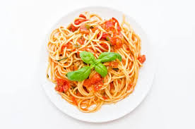

Spaghetti
Home
Image
Image d'un delicieux plat de Spaghetti

Description
Cette recette est un plat de spaghetti au gras bien assaisonne avec omelette.
Ingredients
- 1 sachet de spaghetti
- Huile
- Oeufs
- Tomate en boite
- Condiments ecrases
- 7 epices
- Sel
- Legumes
- ...
Etapes
- Mettre de l'eau au feu pendant 10min
- Couper les legumes
- Mettre les pattes dans l'eau bouillie sur le feu
- Mettre la marmite avec un peu d'huile au feu apres cuisson des pattes
- Faire l'omelette
- Renverser la tomate en boite accompagner des epices et mijauter le melange
- Mettre les legumes dans le melange
- Ajouter un peu d'eau et mijauter puis fermer la marmite
- Apres 30min de cuisson ajouter les pattes et melanger